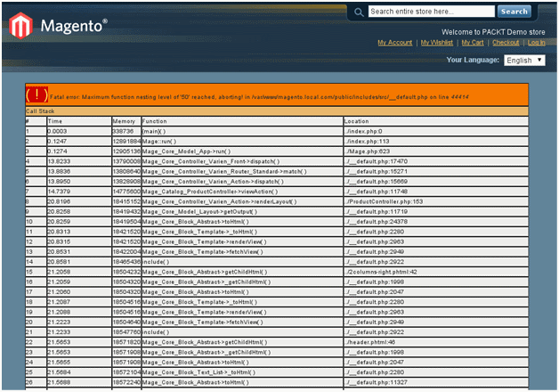
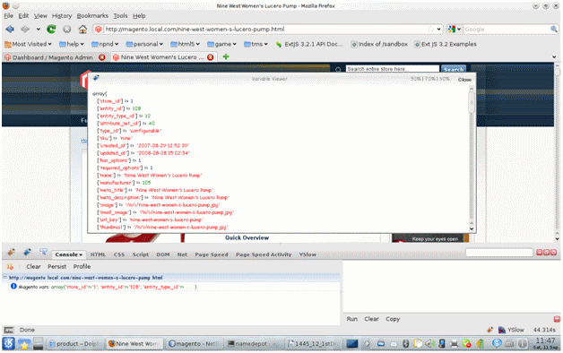
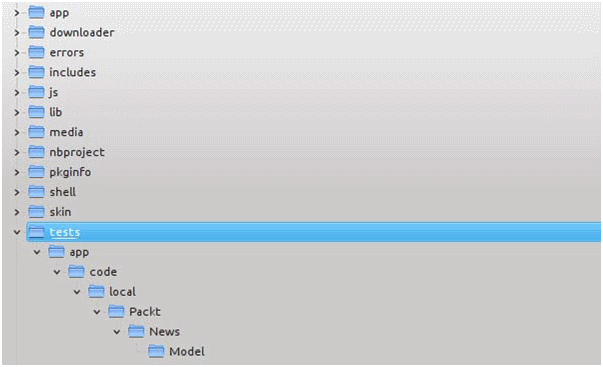
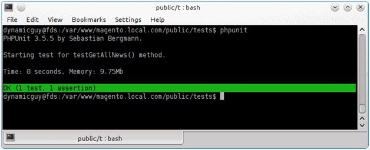

- Установка и настройка Xdebug
- Использование FirePHP с Zend Wildfire плагином
- Установка PHPUnit и необходимые PHP CLI двоичные коды (PHP CLI binaries)
- Напишите ваш первый Magento тестовый пример
Введение
Отладка (и модульное тестирование) является очень важной частью PHP разработчика, как в настоящее время сайт это не просто набор некоторых страниц HTML. Мы осуществляем некоторые из самых сложных бизнес-логик в наших приложениях. Мы можем минимизировать время отладки и доставлять приложение коренной науки (rock solid application) с помощью некоторых дополнительных инструментов, таких как Xdebug, Zend Wildfire plugin, PHPUnit и т.д. Эта глава поможет вам в установке, настройке и использовании Xdebug, Zend Wildfire и PHPUnit любым легким способом
Установка и настройка Xdebug
PHP эхо-отчет (PHP statement echo) и функции var_dump (), debug_zval_dump () и print_r () являются общими и популярные средствами отладки, которые могут помочь в решении различных вопросов. Однако, эти отчеты и еще более надежные приборы – это то, что называется Xdebug, который является очень популярным инструментом для разработчиков PHP по всему миру. Создатель этого инструмента, Дерик Резенс, назвал этот инструмент, как швейцарский армейский нож разработчиков PHP. Основные функции Xdebug включают отображение стека на ошибкочных условиях, максимальной защите уровня вложения (maximum nesting level protection) и учете рабочего времени.
Отладка путем вычета является подходом грубой силы. Вы собираете данные и сдвигаете через него, пытаясь определить, что случилось. При отсутствии необходимой информации, вы должны перестроить свой код, повторить шаги, и перезагрузить исследование. Гораздо более эффективная стратегия - зондировать приложение, пока оно выполняется. Вы можете параметры запроса каталога сдвинуть в порядке стека вызовов и запросить любую переменную или объект, который хотите. Вы можете временно прервать приложение и быть внимательным, пока переменная меняет значение. В некоторых случаях, вы можете влиять на переменные в интерактивном режиме, чтобы задать вопросы типа: "Что если?". В этом рецепте мы установим и настроим для отладки наш Magento скрипт как в IDE или в браузере с данной точки останова.
Как это сделать…
Установка Xdebug:
1. Xdebug может быть установлено различными способами в зависимости от вашей операционной системы. Вы можете скачать бинарный модуль Xdebug для последних версий PHP с сайта http://www.xdebug.org/files/ Xdebug. Мы построим Xdebug от источника и установим его, что является довольно общим для Unix-подобных операционных систем. Нам понадобятся некоторые основные инструменты, чтобы это произошло, такие как: Wget, phpize и некоторые другие предметы.
2. Чтобы продолжить, возьмем последний исходный код в archive/tarball формате из раздела загрузки Xdebug (wget команда может сделать работу легкой):
wget http://www.xdebug.or...debug-2.1.0.tgz
3. Распакуйте архив и измените рабочую папку на извлеченное место (to the extracted location):
tar -xzvf xdebug-2.1.0.tgz
cd xdebug-2.1.0
4. Выполните phpize, чтобы подготовить Xdebug код для вашей версии PHP:
phpize
Configuring for:
PHP Api Version: 20090626
Zend Module Api No: 20090626
Zend Extension Api No: 220090626
5. Давайте теперь запустим скрипт конфигурации; это будет проверять некоторые необходимые заголовки и двоичные файлы:
./configure
checking for grep that handles long lines and -e... /bin/grep
checking for egrep... /bin/grep -E
checking for a sed that does not truncate output... /bin/sed
checking for cc... cc
checking whether the C compiler works... yes
checking for C compiler default output file name... a.out
checking for suffix of executables...
checking whether we are cross compiling... no
checking for suffix of object files... o
checking whether we are using the GNU C compiler... yes
checking whether cc accepts -g... yes
checking for cc option to accept ISO C89... none needed
checking how to run the C preprocessor... cc -E
checking for icc... no
checking for suncc... no
checking whether cc understands -c and -o together... yes
checking for system library directory... lib
checking if compiler supports -R... no
checking if compiler supports -Wl,-rpath,... yes
checking build system type... i686-pc-linux-gnu
checking host system type... i686-pc-linux-gnu
checking target system type... i686-pc-linux-gnu
checking for PHP prefix... /usr
checking for PHP includes... -I/usr/include/php5 -I/usr/include/
php5/main -I/usr/include/php5/TSRM -I/usr/include/php5/Zend
-I/usr/include/php5/ext -I/usr/include/php5/ext/date/lib -D_
LARGEFILE_SOURCE -D_FILE_OFFSET_BITS=64
checking for PHP extension directory... /usr/lib/php5/20090626+lfs
checking for PHP installed headers prefix... /usr/include/php5
checking if debug is enabled... no
checking if zts is enabled... no
….
6. Постройте его, выполнив команду make:
make
/bin/bash /home/dynamicguy/Desktop/xdebug-2.1.0/libtool
--mode=compile cc -I. -I/home/dynamicguy/Desktop/xdebug-2.1.0
-DPHP_ATOM_INC -I/home/dynamicguy/Desktop/xdebug-2.1.0/include
-I/home/dynamicguy/Desktop/xdebug-2.1.0/main -I/home/dynamicguy/
Desktop/xdebug-2.1.0 -I/usr/include/php5 -I/usr/include/php5/
main -I/usr/include/php5/TSRM -I/usr/include/php5/Zend -I/usr/
include/php5/ext -I/usr/include/php5/ext/date/lib -D_LARGEFILE_
SOURCE -D_FILE_OFFSET_BITS=64 -DHAVE_CONFIG_H -g -O0 -c /home/
dynamicguy/Desktop/xdebug-2.1.0/xdebug.c -o xdebug.lo
…....
Постройка завершена.
Не забывайте запускать 'make test'.
7. Установите теперь расширение, выполнив эту команду:
sudo make install
Installing shared extensions: /usr/lib/php5/20090626+lfs/
8. Теперь откройте / etc/php5/cli/conf.d/xdebug.ini и замените содержание следующим:
zend_extension=/usr/lib/php5/20090626+lfs/xdebug.so
xdebug.remote_enable=on
xdebug.remote_log="/var/log/xdebug.log"
xdebug.remote_host=localhost
xdebug.remote_handler=dbgp
xdebug.remote_port=9000
xdebug.remote_mode=req
xdebug.default_enable = On
xdebug.show_exception_trace = On
xdebug.show_local_vars = 1
xdebug.max_nesting_level = 50
xdebug.var_display_max_depth = 6
xdebug.dump_once = On
xdebug.dump_globals = O
xdebug.dump_undefined = On
xdebug.dump.REQUEST = *
xdebug.dump.SERVER = REQUEST_METHOD,REQUEST_URI,HTTP_USER_AGENT
9. Повторите предыдущий шаг для файла / etc/php5/apache2/conf.d/xdebug.ini.
10. Сохраните файл xdebug.ini и перезагрузите Apache:
sudo /etc/init.d/apache2 restart
11. Вы можете теперь проверить Xdebug статус из терминала страницы phpinfo ().
php -i | grep xdebug
/etc/php5/cli/conf.d/xdebug.ini,
xdebug
xdebug support => enabled
xdebug.auto_trace => Off => Off
xdebug.collect_assignments => Off => Off
xdebug.collect_includes => On => On
xdebug.collect_params => 0 => 0
xdebug.collect_return => Off => Off
xdebug.collect_vars => Off => Off
xdebug.default_enable => On => On
xdebug.dump.COOKIE => no value => no value
xdebug.dump.ENV => no value => no value
xdebug.dump.FILES => no value => no value
xdebug.dump.GET => no value => no value
xdebug.dump.POST => no value => no value
xdebug.dump.REQUEST => * => *
xdebug.dump.SERVER => REQUEST_METHOD,REQUEST_URI,HTTP_USER_AGENT
=> REQUEST_METHOD,REQUEST_URI,HTTP_USER_AGENT
xdebug.dump.SESSION => no value => no value
xdebug.dump_globals => On => On
xdebug.dump_once => On => On
xdebug.dump_undefined => On => On
xdebug.extended_info => On => On
xdebug.file_link_format => no value => no value
xdebug.idekey => dynamicguy => no value
xdebug.manual_url => http://www.php.net => http://www.php.net
xdebug.max_nesting_level => 50 => 50
xdebug.overload_var_dump => On => On
xdebug.profiler_aggregate => Off => Off
xdebug.profiler_append => Off => Off
xdebug.profiler_enable => Off => Off
xdebug.profiler_enable_trigger => Off => Off
xdebug.profiler_output_dir => /tmp => /tmp
xdebug.profiler_output_name => cachegrind.out.%p => cachegrind.
out.%p
xdebug.remote_autostart => Off => Off
xdebug.remote_connect_back => Off => Off
xdebug.remote_cookie_expire_time => 3600 => 3600
xdebug.remote_enable => On => On
xdebug.remote_handler => dbgp => dbgp
xdebug.remote_host => localhost => localhost
xdebug.remote_log => /var/log/xdebug.log => /var/log/xdebug.log
xdebug.remote_mode => req => req
xdebug.remote_port => 9000 => 9000
xdebug.scream => Off => Off
xdebug.show_exception_trace => On => On
xdebug.show_local_vars => On => On
xdebug.show_mem_delta => Off => Off
xdebug.trace_format => 0 => 0
xdebug.trace_options => 0 => 0
xdebug.trace_output_dir => /tmp => /tmp
xdebug.trace_output_name => trace.%c => trace.%c
xdebug.var_display_max_children => 128 => 128
xdebug.var_display_max_data => 512 => 512
xdebug.var_display_max_depth => 6 => 6
PWD => /home/dynamicguy/Desktop/xdebug-2.1.0
_SERVER["PWD"] => /home/dynamicguy/Desktop/xdebug-2.1.0
12. Кроме того, вы можете проверить это на странице ошибок PHP.
13. Последний шаг этого рецепта состоит в изменении основного кода Magento так, что мы можем видеть ошибки в Magento с Xdebug. Откройте файл Mage.php из app директории и замените run метод этим:
/**
* Front end main entry point
*
* @param string $code
* @param string $type
* @param string|array $options
*/
public static function run($code = '', $type = 'store',
$options=array())
{
if (!self::getIsDeveloperMode()) {
try {
Varien_Profiler::start('mage');
self::setRoot();
self::$_app = new Mage_Core_Model_App();
self::$_events = new Varien_Event_Collection();
self::$_config = new Mage_Core_Model_Config();
self::$_app->run(array(
'scope_code' => $code,
'scope_type' => $type,
'options' => $options,
));
Varien_Profiler::stop('mage');
} catch (Mage_Core_Model_Session_Exception $e) {
header('Location: ' . self::getBaseUrl());
die();
} catch (Mage_Core_Model_Store_Exception $e) {
require_once(self::getBaseDir() . DS . 'errors' . DS .
'404.php');
die();
} catch (Exception $e) {
if (self::isInstalled() || self::$_isDownloader) {
self::printException($e);
exit();
}
try {
self::dispatchEvent('mage_run_exception',
array('exception' => $e));
if (!headers_sent()) {
header('Location:' . self::getUrl('install'));
} else {
self::printException($e);
}
} catch (Exception $ne) {
self::printException($ne, $e->getMessage());
}
}
} else {
Varien_Profiler::start('mage');
self::setRoot();
self::$_app = new Mage_Core_Model_App();
self::$_events = new Varien_Event_Collection();
self::$_config = new Mage_Core_Model_Config();
self::$_app->run(array(
'scope_code' => $code,
'scope_type' => $type,
'options' => $options,
));
Varien_Profiler::stop('mage');
}
}
14. Теперь, если мы изменим код файла app/design/frontend/base/default/template/catalog/product/view.phtml и положим какой-то код ошибки PHP (error prone code ) (попробуйте это: <?php echo ?>)сознательно, мы должны увидеть страницу вроде этой:

Если вы хотите, чтобы ваши ошибки были яркими, не забудьте установить html_errors = On в файле php.ini. В ОС Unix это должно быть в / etc/php5/apache2/php.ini.
Как это работает...
В этом рецепте мы установили Xdebug из источника. Мы взяли исходный код Xdebug из его онлайн хранилища. Затем мы компилировали его. Это очень похоже на какое-либо типичное PHP расширение - phpize | configure | make | make install. После установки мы настроили Xdebug ini конфигурацию как для CLI, так и для Apache. Параметры конфигурации могут быть различными, как вам будет угодно. Вы можете видеть больше опций конфигурации на http://xdebug.org/docs/all_settings.
Наконец, мы настроили условие в методе run() Mage.php, чтобы печатать исключения только в режиме разработчика. Мы проверили это с методом self::getIsDeveloperMode().
Если Вам интересно посмотреть, как режим разработчика установлен, посмотрите на файл index.php и найдите следующие строки:
if (isset($_SERVER['MAGE_IS_DEVELOPER_MODE'])) {
Mage::setIsDeveloperMode(true);
}
Вы можете установить режим разработчика через htaccess или Apache концигурацию сайта. Для htaccess, поместите следующую строку в ваш htaccess:
setEnv MAGE_IS_DEVELOPER_MODE true
Больше...
Скажем, для вычисления числа Фибоначчи ваши условия терминала являются неверными, приложение может работать в течение очень долгого времени, прежде чем он выбегает из памяти или времени. Вы можете установить xdebug.max_nesting_level параметр для ограничения глубины рекурсии. Например, xdebug.max_nesting_level = 50 ограничивает рекурсию на глубину 50 вложенных вызовов до того, как приложение вынуждено ограничить. Чтобы продемонстрировать, запустите код с включенным Xdebug. Это, как мы создали некоторые директивы конфигурации для отладки нашего Magento скрипта.
Использование FirePHP с Zend Wildfire плагином
FirePHP - это Firebug дополнение для браузера Firefox, которое полезно для отладки сценария PHP. FirePHP может быть использовано с помощью установки его из репозитория PEAR или из библиотеки Zend Framework. Magento CMS построен на вершине Zend Framework, который имеет богатые PHP библиотеки и плагины. Zend Wildfire plugin FirePHP является одним из них. Этот рецепт поможет вам использовать этот плагин в Magento.
Подготовка
Мы будем использовать Firebug и FirePHP консоли, таким образом, мы добрались до установки этих двух дополнений и, конечно, самого Firefox.
Как это сделать…
1. Запустите ваш Magento проект в вашем любимом PHP IDE.
2. Добавьте следующий фрагмент кода на 70 строку index.php:
// ---------------------------------------------------------------
// wildfire plugin calling function
// ---------------------------------------------------------------
/**
* Logs variables to the Firebug Console
* via HTTP response headers and the FirePHP Firefox Extension.
*
* @param mixed $var The variable to log.
* @param string $label OPTIONAL Label to prepend to the log
event.
* @param string $style OPTIONAL Style of the log event.
* @param array $options OPTIONAL Options to change how messages
are processed and sent
* @return boolean Returns TRUE if the variable was added to the
response headers or buffered.
* @throws Zend_Wildfire_Exception
*/
function toFirePHP($var, $label = 'Magento vars', $style = 'INFO',
$options=array())
{
if (Mage::getIsDeveloperMode()) {
$httpRequest = new Zend_Controller_Request_Http();
$httpResponse = new Zend_Controller_Response_Http();
$channel = Zend_Wildfire_Channel_HttpHeaders::getInstance();
$channel->setRequest($httpRequest);
$channel->setResponse($httpResponse);
ob_start();
Zend_Wildfire_Plugin_FirePhp::send($var, $label, $style,
$options);
$channel->flush();
$httpResponse->sendHeaders();
} else {
return null;
}
}
// ---------------------------------------------------------------
--------------
// wildfire plugin calling function ends
// ---------------------------------------------------------------
3. Сохраните и закройте index.php.
4. Убедитесь, что Magento profiler и режим разработчика (developer's mode ) включены (ON).
5. Вы можете вызвать toFirePHP функцию из любой точки Magento CMS. Давайте попробуем это с view.phtml из каталога app/design/frontend/base/default/template/catalog/product/.
6. Добавьте эту строку в view.phtml на линии № 38 и запустить его:
<?php toFirePHP($_product->debug());?>
7. Вы должны увидеть страницу что-то вроде следующего скриншота, если у вас Firebug и FirePHP консоли включены:

Как это работает...
Мы написали toFirePHP(), чтобы передать переменную FirePHP консоли с различными опциями. Мы можем передать ее как LOG, INFO, WARN, ERROR, EXCEPTION, TRACE, TABLE, DUMP, GROUP_START или GROUP_END через третий параметр toFirePHP () функции. Хотя первый – это placeholder («заполнитель») для сброса переменной, который будет показан в консоли, а второй предназначен для лейбла в консоли.
Убедитесь, что добавили свой Magento домен в FirePHP
Чтобы заставить его работать с FirePHP, вы должны добавить свой домен в FirePHP, как белый список. Вы можете добавит /блокировать домен, нажав на иконку FirePHP, а затем ссылку Allowed Sites...
Установка PHPUnit и необходимых двоичных кодов PHP CLI
PHPUnit - это инструмент, который мы будем использовать для unit тестирования. Установка PHPUnit довольно проста, т.к. мы будем использовать PEAR инсталлятор. Рекомендуется установить его через PEAR. PEAR поставляется вместе с каждым выпуском PHP, начиная с версии 4.3.0. В Unix-подобных операционных системах PEAR добавлен в каталог исполняемых файлов, например, /usr/bin, /usr/local/bin и т.д. Таким образом, PEAR команда доступна из любого места. Пакет pear может быть установлен с помощью следующей команды:
apt-get install php-pear
Если вы находитесь в Windows и используете XAMPP, вы должны увидеть exe файл с именем pear.exe в папке \xampp\php. Если вы не видите pear.exe, вы должны запустить pear.bat файл, чтобы установить его. Вы можете видеть больше инструкций: http://pear.php.net/...on.getting.php. После установки PEAR вы должны перейти к (cd C:\\xampp\php) каталогу php до выдачи команды, показанной в следующем ow to do it... разделе.
Как это сделать…
1. PEAR канал (pear.phpunit.de) используется для распространения PHPUnit. Этот канал должен быть зарегистрирован с локальной PEAR средой. Выполните следующую команду в терминале, чтобы обнаружить ее:
pear channel-discover pear.phpunit.de
2. Есть некоторые компоненты в (components.ez.no) канале, от которых PHPUnit
зависит. Таким образом, наш следующий канал, чтобы обнаружить, это:
pear channel-discover components.ez.no
3. Компонент, от которого PHPUnit зависит, размещен на Symfony Components PEAR канале (pear.symfony-project.com). Это последний канал, чтобы обнаружить:
pear channel-discover pear.symfony-project.com
4. Пора установить сам PHPUnit:
pear install phpunit/PHPUnit
5. При этом будут установлены все необходимые зависимости и PHPUnit из интернета.
6. Следующий инструмент для установки - PHP5-CLI. Вы можете установить его через терминал с помощью следующей команды:
sudo apt-get install php5-cli
Как это работает...
PHPUnit является членом семейства XUnit для PHP. Он предшественник популярного блока тестирования для Java JUnit.
PEAR каналы – это репозиторий для различных PEAR пакетов. Эти каналы используются для распределения пакетов PEAR. Мы обнаружили каналы с командой channel-discover.
Наконец, мы выдали команду для установки PHPUnit установки через PEAR установщика. Вы можете проверить свою PHPUnit инсталляцию в терминале, выполнив следующую команду:
phpunit –version
Предыдущая команда должна возвратить текст, подобный follPHPUnit 3.5.5 от Себастьяна Бергмана.
Больше…
Кроме того, вы можете установить его из архива:
1. Скачайте архив новинок из http://pear.phpunit.de/get/ и распакуйте его в каталог, который указан в include_path вашего php.ini файла конфигурации.
2. Подготовьте phpunit скрипт:
- Переименуйте phpunit.php сценарий на phpunit.
- Замените строку @php_bin@ в нем на путь к вашему PHP интерпретатору командной строки (как правило, /usr/bin/php).
- Скопируйте его в каталог, который находится в вашем пути, и сделайте его исполняемым (chmod +x phpunit).
3. Подготовьте PHPUnit / Util / PHP.php скрипт:
- Замените строку @php_bin@ в нем на путь к вашему PHP интерпретатору командной строки (как правило, /usr/bin/php).
Создание первого тестового примера Magento
Test Driven Development (TDD) стала популярной и широко принятой практикой сегодня. Она связана с тест-первыми концепциями программирования экстремального программирования. В TDD контрольных примерах должны быть написаны первыми, хотя в этом рецепте мы будем писать тестовые примеры для унаследованных кодов.
Magento построена на вершине Zend Framework, которая сама по себе пртестирована и поддерживает Test Driven Development. В Magento мы можем написать юнит-тесты с помощью PHPUnit для нашего собственного модуля или любых других существующих модулей для лучшего принятия. Этот рецепт поможет вам написать первый тестовый пример для Magento. В этом рецепте мы будем писать тесты для News модели модуля новостей.
Подготовка
Установите PHPUnit, Xdebug и PHP5-CLI двоичные коды. Убедитесь, что вы создали свой News модуль, как у нас было описано в главе 8 (Creating a Module) этой книги.
Как это сделать…
1. Создайте новую папку в вашем корне Magento и назовите ее как tests .
2. Создайте новый PHP файл в папке tests с именем autoload.php.
3. Ниже приводится содержание autoload.php. Этот файл содержит некоторые ini параметры и экземпляр (реализации) (instantiation) Magento ,который будет использоваться в unit тестах:
<?php
ini_set('include_path', ini_get('include_path') . PATH_SEPARATOR
. dirname(__FILE__) . '/../app' . PATH_SEPARATOR . dirname(__
FILE__));
//code coverage generation requires lots of memory
ini_set('memory_limit', '512M');
//autoloading will work as we set the inlcude path earlier
require_once 'Mage.php';
//creating the Magento application instance
Mage::app('default');
//so we don't get "Headers already sent message" in case of error,
can also var_dump now...
session_start();
4. Создайте новый XML файл в tests папке и назовите его phpunit.xml.
5. Теперь положите следующие данные в него. Данные для создания тестового комплекта для Magento:
<?xml version="1.0" encoding="UTF-8" ?>
<phpunit backupGlobals="false"
backupStaticAttributes="false"
colors="true"
convertErrorsToExceptions="true"
convertNoticesToExceptions="true"
convertWarningsToExceptions="true"
processIsolation="true"
stopOnFailure="false"
syntaxCheck="true"
bootstrap="./autoload.php"
>
<testsuite name="Magento Test Suite">
<directory>./</directory>
</testsuite>
<filter>
<whitelist>
<directory>../app/code/local</directory>
</whitelist>
</filter>
</phpunit>
6. Создайте необходимые папки, как на следующем скриншоте показано:

Если вы в окне Linux, вы можете создать все каталоги через одну команду (если вы находитесь в каталоге тестов): mkdir -p app/code/local/Packt/News/Model/.
7. Теперь создайте новый файл PHP в tests/app/code/local/Packt/News/Model/ папке и назовите его как NewsTest.php.
8. Вложим содержание NewsTest.php следующим образом:
<?php
require_once 'PHPUnit/Framework.php';
class NewsTest extends PHPUnit_Framework_TestCase
{
protected $_newsModel;
public function setUp()
{
echo 'Starting test for ', $this->getName(), '() method';
Mage::app('default');
$this->_newsModel = Mage::getModel('news/news');
}
protected function tearDown()
{
}
public function testGetAllNews()
{
$newses = $this->_newsModel->getCollection();
$this->assertEquals(2, sizeof($newses));
}
}
9. Теперь откройте терминал и перейдите в каталог tests. Напишите phpunit в терминале и нажмите ввод.
phpunit
10. Вы должны увидеть скрин, похожий на следующий:

Как это работает...
Самое первое задание для выполнения в этом рецепте – это создание необходимой файловой структуры и экземпляра приложения Magento. Мы сделали это, как в данном скриншоте, и создали новый autoload.php файл. Большинство работы мы здесь сделали, потому что все необходимые Mage функции изначально загружены. Вы можете использовать любой контроллер, модель, вызов Mage основных (центральных) функций, помощников и другие, которые приходят в соответствии с определенным каталогом в phpunit.xml.
phpunit конфигурации тестового набора находятся в файле phpunit.xml. Мы указали тестовый каталог, белый списочный фильтр для источников, предназначенных для тестирования, и некоторые PHPUnit атрибуты, такие как цвета, загрузочный файл, syntaxCheck и т.д.
Последним шагом было написание самого тестового примера. Мы включили PHPUnit основу (framework ) в начале. Мы написали класс с именем NewsTest, который продлил PHPUnit_Framework_TestCase. Методы setUp() и tearDown() вызываются перед запуском каждого теста. Мы назначили News модель через Mage в методе setUp(). testGetAllNews () – это тестовый пример для модели News, который проверяет, возвращает или нет News модель две строки. Мы считаем, что наша таблица news имеет два входа (entries). Если модель News возвращает две строки, то она пройдет тест или иначе провалит его. Вы можете и вам настоятельно рекомендуется написать больше тестов таким способом.
Больше...
Вы можете полностью автоматизировать тестирование с помощью методов setUp и tearDown. Скажем, мы в первую очередь очистили таблицу и добавили в нее две строки через модель News в setUp().
После проверки этих двух строк в тестовых примерах мы удаляем эти две вставленные строки в tearDown методе, чтобы сделать базу данных такой, какой она была раньше.
См. также
- Установка PHPUnit и необходимых PHP CLI двоичных файлов
- Установка и настройка Xdebug